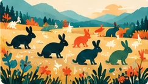

Different lenses on life's complexity.
Play, explore, and see ideas come to life.

See how chance alone can change a population over time.
Explore the cyclical dance between predators and prey.
Zoom from the instrument to the microscopic scale.